메이플 키우기 · 별도 게임 분석 · 13페이지
재시작의 성장 부담을
기존 지원으로 줄일 수 있을까?
개인 재육성 경험과 공식 성장 이벤트의 참여 조건을 비교했습니다. 생성일 대신 현재 성장 구간으로 참여 대상을 넓히는 모의 운영안과 검증 계획을 담았습니다.
기존 C의 환불·CS 대응과 다른 질문을 다룬 추가 분석서입니다. 개인 경험은 전체 이용자의 이탈 원인이 아니며, 제안은 미실행입니다. 제공받은 13장 원본의 내용을 보존했습니다.
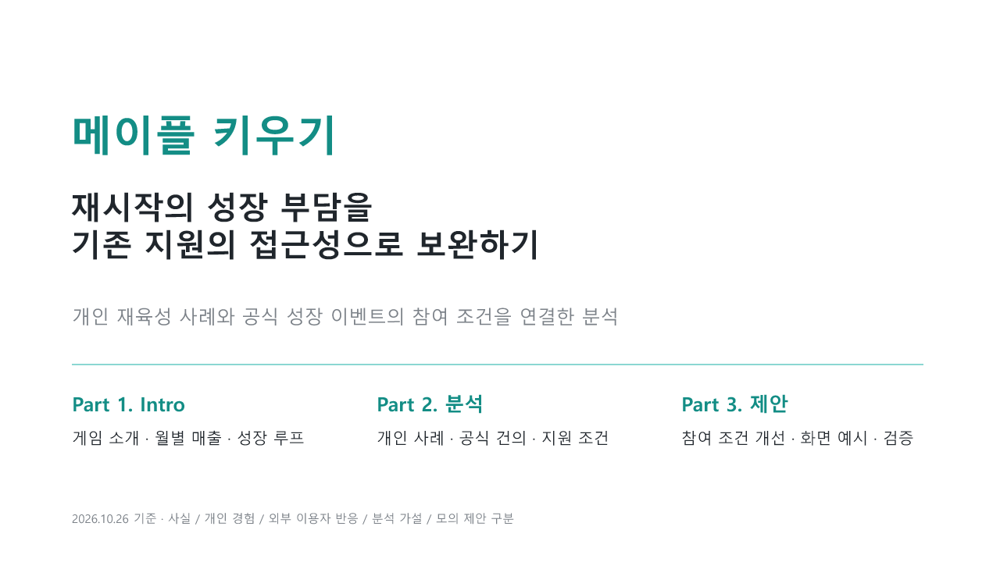
슬라이드 텍스트 보기
메이플 키우기 · 재시작의 성장 부담을 · 기존 지원의 접근성으로 보완하기 · 개인 재육성 사례와 공식 성장 이벤트의 참여 조건을 연결한 분석 · Part 1. Intro · 게임 소개 · 월별 매출 · 성장 루프 · Part 2. 분석 · 개인 사례 · 공식 건의 · 지원 조건 · Part 3. 제안 · 참여 조건 개선 · 화면 예시 · 검증 · 2026.10.26 기준 · 사실 / 개인 경험 / 외부 이용자 반응 / 분석 가설 / 모의 제안 구분
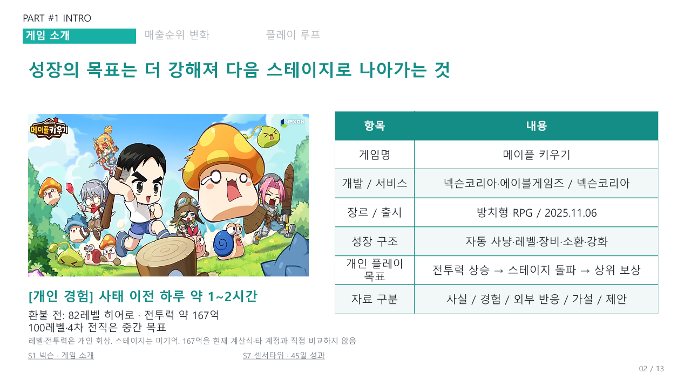
슬라이드 텍스트 보기
항목 · 내용 · 게임명 · 메이플 키우기 · 개발 / 서비스 · 넥슨코리아·에이블게임즈 / 넥슨코리아 · 장르 / 출시 · 방치형 RPG / 2025.11.06 · 성장 구조 · 자동 사냥·레벨·장비·소환·강화 · 개인 플레이 목표 · 전투력 상승 → 스테이지 돌파 → 상위 보상 · 자료 구분 · 사실 / 경험 / 외부 반응 / 가설 / 제안 · PART #1 INTRO · 게임 소개 · 매출순위 변화 · 플레이 루프 · 성장의 목표는 더 강해져 다음 스테이지로 나아가는 것 · 02 / 13 · [개인 경험] 사태 이전 하루 약 1~2시간 · 환불 전: 82레벨 히어로 · 전투력 약 167억 · 100레벨·4차 전직은 중간 목표 · S1 넥슨 · 게임 소개 · S7 센서타워 · 45일 성과 · 레벨·전투력은 개인 회상. 스테이지는 미기억. 167억을 현재 계산식·타 계정과 직접 비교하지 않음
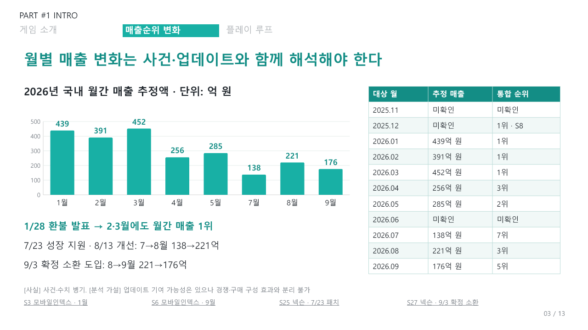
슬라이드 텍스트 보기
PART #1 INTRO · 게임 소개 · 매출순위 변화 · 플레이 루프 · 월별 매출 변화는 사건·업데이트와 함께 해석해야 한다 · 03 / 13 · 2026년 국내 월간 매출 추정액 · 단위: 억 원 · 대상 월 · 추정 매출 · 통합 순위 · 2025.11 · 미확인 · 미확인 · 2025.12 · 미확인 · 1위 · S8 · 2026.01 · 439억 원 · 1위 · 2026.02 · 391억 원 · 1위 · 2026.03 · 452억 원 · 1위 · 2026.04 · 256억 원 · 3위 · 2026.05 · 285억 원 · 2위 · 2026.06 · 미확인 · 미확인 · 2026.07 · 138억 원 · 7위 · 2026.08 · 221억 원 · 3위 · 2026.09 · 176억 원 · 5위 · 1/28 환불 발표 → 2·3월에도 월간 매출 1위 · 7/23 성장 지원 · 8/13 개선: 7→8월 138→221억 · 9/3 확정 소환 도입: 8→9월 221→176억 · S3 모바일인덱스 · 1월 · S6 모바일인덱스 · 9월 · S25 넥슨 · 7/23 패치 · S27 넥슨 · 9/3 확정 소환 · [사실] 사건·수치 병기. [분석 가설] 업데이트 기여 가능성은 있으나 경쟁·구매 구성 효과와 분리 불가
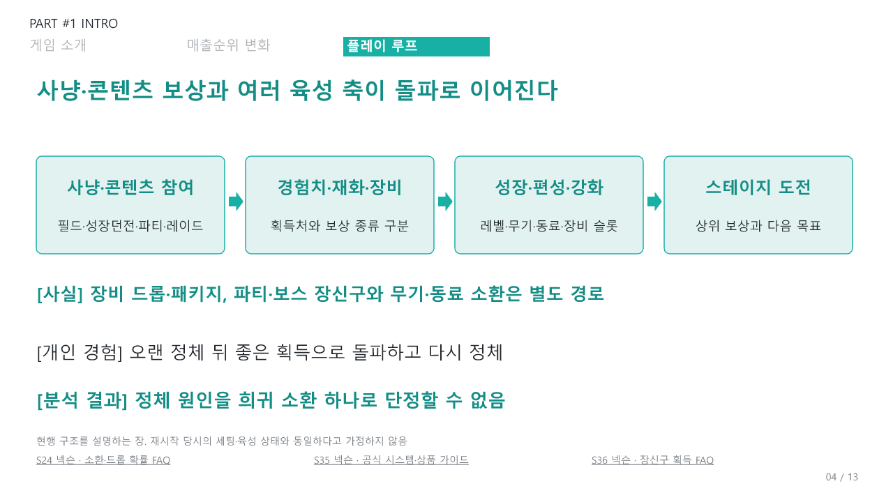
슬라이드 텍스트 보기
PART #1 INTRO · 게임 소개 · 매출순위 변화 · 플레이 루프 · 사냥·콘텐츠 보상과 여러 육성 축이 돌파로 이어진다 · 04 / 13 · 사냥·콘텐츠 참여 · 필드·성장던전·파티·레이드 · 경험치·재화·장비 · 획득처와 보상 종류 구분 · 성장·편성·강화 · 레벨·무기·동료·장비 슬롯 · 스테이지 도전 · 상위 보상과 다음 목표 · [사실] 장비 드롭·패키지, 파티·보스 장신구와 무기·동료 소환은 별도 경로 · [개인 경험] 오랜 정체 뒤 좋은 획득으로 돌파하고 다시 정체 · [분석 결과] 정체 원인을 희귀 소환 하나로 단정할 수 없음 · S24 넥슨 · 소환·드롭 확률 FAQ · S35 넥슨 · 공식 시스템·상품 가이드 · S36 넥슨 · 장신구 획득 FAQ · 현행 구조를 설명하는 장. 재시작 당시의 세팅·육성 상태와 동일하다고 가정하지 않음
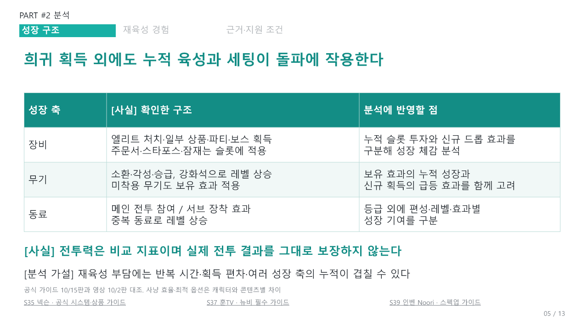
슬라이드 텍스트 보기
PART #2 분석 · 성장 구조 · 재육성 경험 · 근거·지원 조건 · 희귀 획득 외에도 누적 육성과 세팅이 돌파에 작용한다 · 05 / 13 · 성장 축 · [사실] 확인한 구조 · 분석에 반영할 점 · 장비 · 엘리트 처치·일부 상품·파티·보스 획득 · 주문서·스타포스·잠재는 슬롯에 적용 · 누적 슬롯 투자와 신규 드롭 효과를 · 구분해 성장 체감 분석 · 무기 · 소환·각성·승급, 강화석으로 레벨 상승 · 미착용 무기도 보유 효과 적용 · 보유 효과의 누적 성장과 · 신규 획득의 급등 효과를 함께 고려 · 동료 · 메인 전투 참여 / 서브 장착 효과 · 중복 동료로 레벨 상승 · 등급 외에 편성·레벨·효과별 · 성장 기여를 구분 · [사실] 전투력은 비교 지표이며 실제 전투 결과를 그대로 보장하지 않는다 · [분석 가설] 재육성 부담에는 반복 시간·획득 편차·여러 성장 축의 누적이 겹칠 수 있다 · S35 넥슨 · 공식 시스템·상품 가이드 · S37 훈TV · 뉴비 필수 가이드 · S39 인벤 Noori · 스펙업 가이드 · 공식 가이드 10/15판과 영상 10/2판 대조. 사냥 효율·최적 옵션은 캐릭터와 콘텐츠별 차이
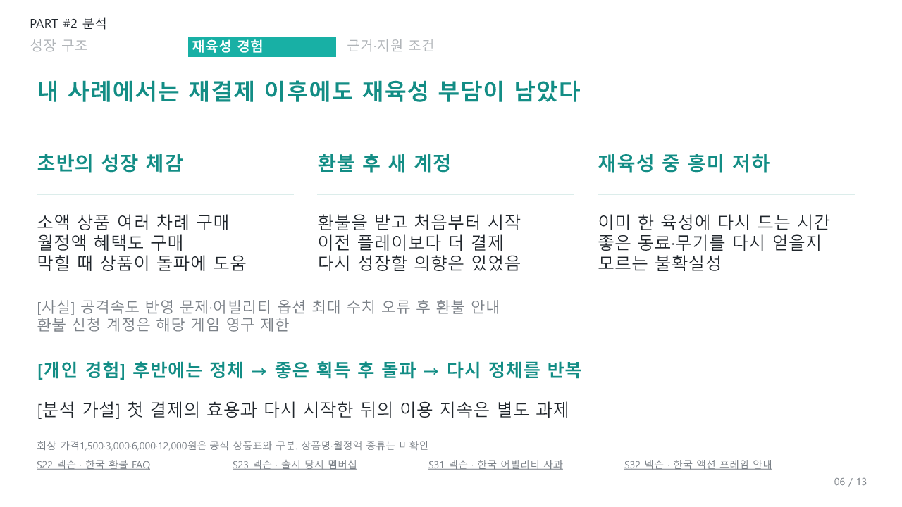
슬라이드 텍스트 보기
PART #2 분석 · 성장 구조 · 재육성 경험 · 근거·지원 조건 · 내 사례에서는 재결제 이후에도 재육성 부담이 남았다 · 06 / 13 · 초반의 성장 체감 · 소액 상품 여러 차례 구매 · 월정액 혜택도 구매 · 막힐 때 상품이 돌파에 도움 · 환불 후 새 계정 · 환불을 받고 처음부터 시작 · 이전 플레이보다 더 결제 · 다시 성장할 의향은 있었음 · 재육성 중 흥미 저하 · 이미 한 육성에 다시 드는 시간 · 좋은 동료·무기를 다시 얻을지 · 모르는 불확실성 · [사실] 공격속도 반영 문제·어빌리티 옵션 최대 수치 오류 후 환불 안내 · 환불 신청 계정은 해당 게임 영구 제한 · [개인 경험] 후반에는 정체 → 좋은 획득 후 돌파 → 다시 정체를 반복 · [분석 가설] 첫 결제의 효용과 다시 시작한 뒤의 이용 지속은 별도 과제 · S22 넥슨 · 한국 환불 FAQ · S23 넥슨 · 출시 당시 멤버십 · S31 넥슨 · 한국 어빌리티 사과 · S32 넥슨 · 한국 액션 프레임 안내 · 회상 가격1,500·3,000·6,000·12,000원은 공식 상품표와 구분. 상품명·월정액 종류는 미확인
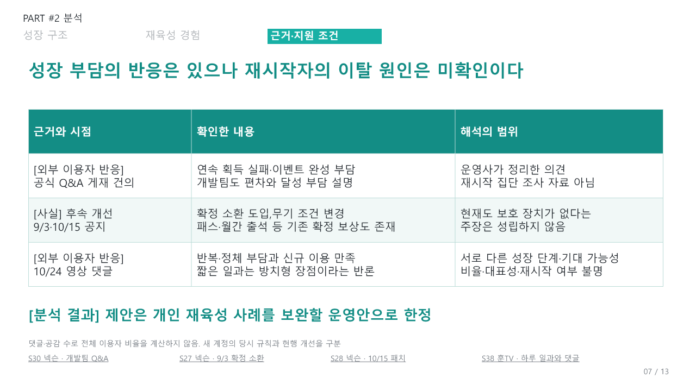
슬라이드 텍스트 보기
PART #2 분석 · 성장 구조 · 재육성 경험 · 근거·지원 조건 · 성장 부담의 반응은 있으나 재시작자의 이탈 원인은 미확인이다 · 07 / 13 · 근거와 시점 · 확인한 내용 · 해석의 범위 · [외부 이용자 반응] · 공식 Q&A 게재 건의 · 연속 획득 실패·이벤트 완성 부담 · 개발팀도 편차와 달성 부담 설명 · 운영사가 정리한 의견 · 재시작 집단 조사 자료 아님 · [사실] 후속 개선 · 9/3·10/15 공지 · 확정 소환 도입,무기 조건 변경 · 패스·월간 출석 등 기존 확정 보상도 존재 · 현재도 보호 장치가 없다는 · 주장은 성립하지 않음 · [외부 이용자 반응] · 10/24 영상 댓글 · 반복·정체 부담과 신규 이용 만족 · 짧은 일과는 방치형 장점이라는 반론 · 서로 다른 성장 단계·기대 가능성 · 비율·대표성·재시작 여부 불명 · [분석 결과] 제안은 개인 재육성 사례를 보완할 운영안으로 한정 · S30 넥슨 · 개발팀 Q&A · S27 넥슨 · 9/3 확정 소환 · S28 넥슨 · 10/15 패치 · S38 훈TV · 하루 일과와 댓글 · 댓글·공감 수로 전체 이용자 비율을 계산하지 않음. 새 계정의 당시 규칙과 현행 개선을 구분
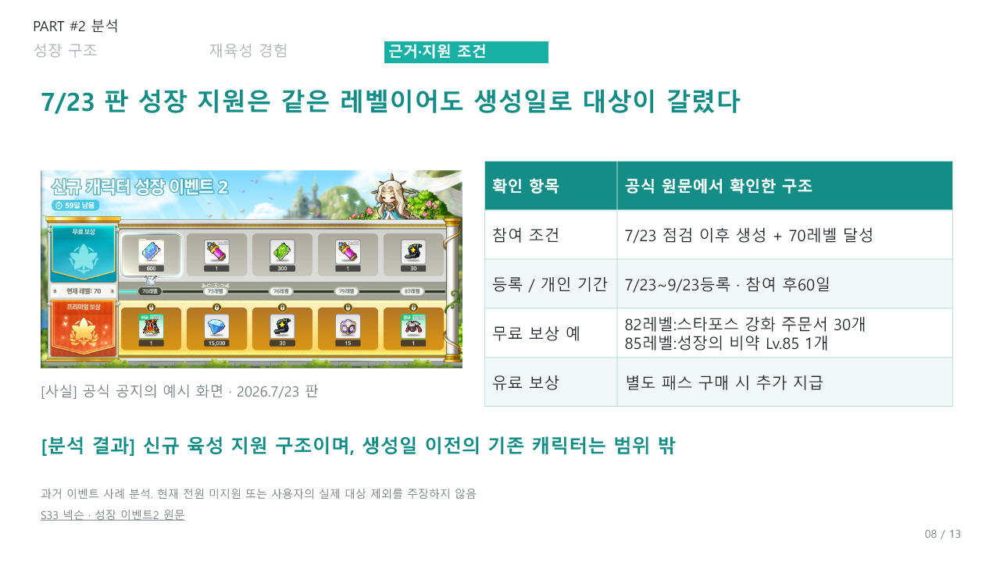
슬라이드 텍스트 보기
PART #2 분석 · 성장 구조 · 재육성 경험 · 근거·지원 조건 · 7/23 판 성장 지원은 같은 레벨이어도 생성일로 대상이 갈렸다 · 08 / 13 · [사실] 공식 공지의 예시 화면 · 2026.7/23 판 · 확인 항목 · 공식 원문에서 확인한 구조 · 참여 조건 · 7/23 점검 이후 생성 + 70레벨 달성 · 등록 / 개인 기간 · 7/23~9/23등록 · 참여 후60일 · 무료 보상 예 · 82레벨:스타포스 강화 주문서 30개 · 85레벨:성장의 비약 Lv.85 1개 · 유료 보상 · 별도 패스 구매 시 추가 지급 · [분석 결과] 신규 육성 지원 구조이며, 생성일 이전의 기존 캐릭터는 범위 밖 · S33 넥슨 · 성장 이벤트2 원문 · 과거 이벤트 사례 분석. 현재 전원 미지원 또는 사용자의 실제 대상 제외를 주장하지 않음
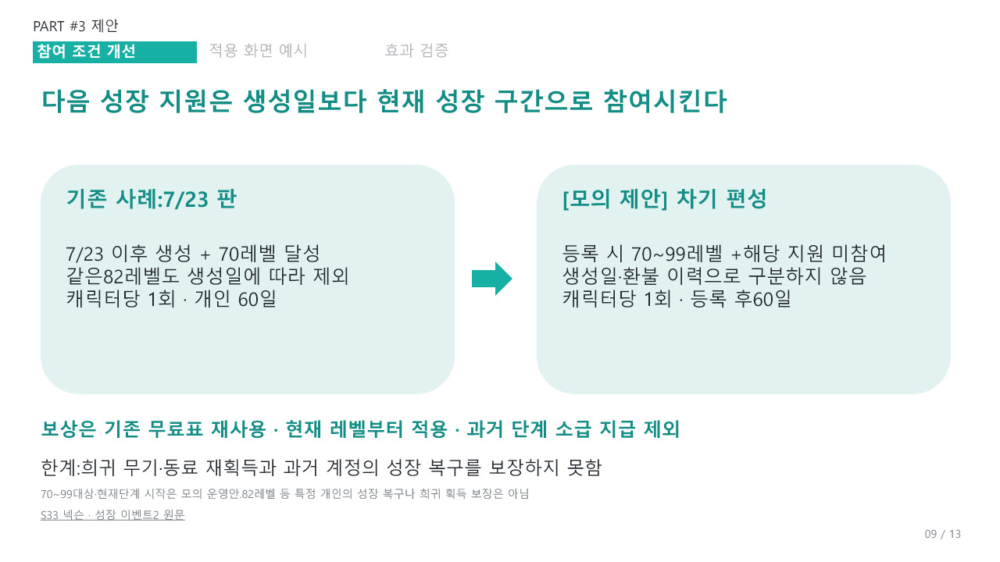
슬라이드 텍스트 보기
PART #3 제안 · 참여 조건 개선 · 적용 화면 예시 · 효과 검증 · 다음 성장 지원은 생성일보다 현재 성장 구간으로 참여시킨다 · 09 / 13 · 기존 사례:7/23 판 · 7/23 이후 생성 + 70레벨 달성 · 같은82레벨도 생성일에 따라 제외 · 캐릭터당 1회 · 개인 60일 · [모의 제안] 차기 편성 · 등록 시 70~99레벨 +해당 지원 미참여 · 생성일·환불 이력으로 구분하지 않음 · 캐릭터당 1회 · 등록 후60일 · 보상은 기존 무료표 재사용 · 현재 레벨부터 적용 · 과거 단계 소급 지급 제외 · 한계:희귀 무기·동료 재획득과 과거 계정의 성장 복구를 보장하지 못함 · S33 넥슨 · 성장 이벤트2 원문 · 70~99대상·현재단계 시작은 모의 운영안.82레벨 등 특정 개인의 성장 복구나 희귀 획득 보장은 아님
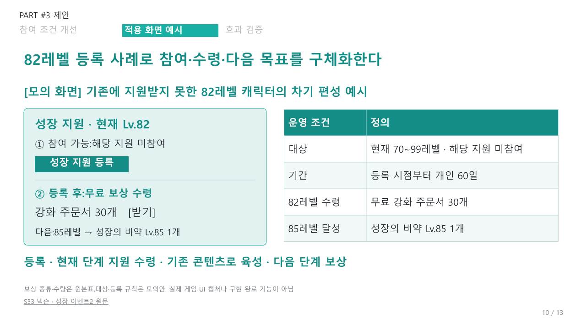
슬라이드 텍스트 보기
PART #3 제안 · 참여 조건 개선 · 적용 화면 예시 · 효과 검증 · 82레벨 등록 사례로 참여·수령·다음 목표를 구체화한다 · 10 / 13 · [모의 화면] 기존에 지원받지 못한 82레벨 캐릭터의 차기 편성 예시 · 성장 지원 · 현재 Lv.82 · ① 참여 가능:해당 지원 미참여 · 성장 지원 등록 · ② 등록 후:무료 보상 수령 · 강화 주문서 30개 [받기] · 다음:85레벨 → 성장의 비약 Lv.85 1개 · 운영 조건 · 정의 · 대상 · 현재 70~99레벨 · 해당 지원 미참여 · 기간 · 등록 시점부터 개인 60일 · 82레벨 수령 · 무료 강화 주문서 30개 · 85레벨 달성 · 성장의 비약 Lv.85 1개 · 등록 · 현재 단계 지원 수령 · 기존 콘텐츠로 육성 · 다음 단계 보상 · S33 넥슨 · 성장 이벤트2 원문 · 보상 종류·수량은 원본표,대상·등록 규칙은 모의안. 실제 게임 UI 캡처나 구현 완료 기능이 아님
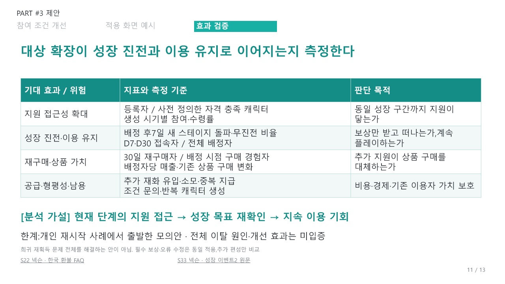
슬라이드 텍스트 보기
PART #3 제안 · 참여 조건 개선 · 적용 화면 예시 · 효과 검증 · 대상 확장이 성장 진전과 이용 유지로 이어지는지 측정한다 · 11 / 13 · 기대 효과 / 위험 · 지표와 측정 기준 · 판단 목적 · 지원 접근성 확대 · 등록자 / 사전 정의한 자격 충족 캐릭터 · 생성 시기별 참여·수령률 · 동일 성장 구간까지 지원이 닿는가 · 성장 진전·이용 유지 · 배정 후7일 새 스테이지 돌파·무진전 비율 · D7·D30 접속자 / 전체 배정자 · 보상만 받고 떠나는가,계속 플레이하는가 · 재구매·상품 가치 · 30일 재구매자 / 배정 시점 구매 경험자 · 배정자당 매출·기존 상품 구매 변화 · 추가 지원이 상품 구매를 대체하는가 · 공급·형평성·남용 · 추가 재화 유입·소모·중복 지급 · 조건 문의·반복 캐릭터 생성 · 비용·경제·기존 이용자 가치 보호 · [분석 가설] 현재 단계의 지원 접근 → 성장 목표 재확인 → 지속 이용 기회 · 한계:개인 재시작 사례에서 출발한 모의안 · 전체 이탈 원인·개선 효과는 미입증 · S22 넥슨 · 한국 환불 FAQ · S33 넥슨 · 성장 이벤트2 원문 · 희귀 재획득 문제 전체를 해결하는 안이 아님. 필수 보상·오류 수정은 동일 적용,추가 편성만 비교
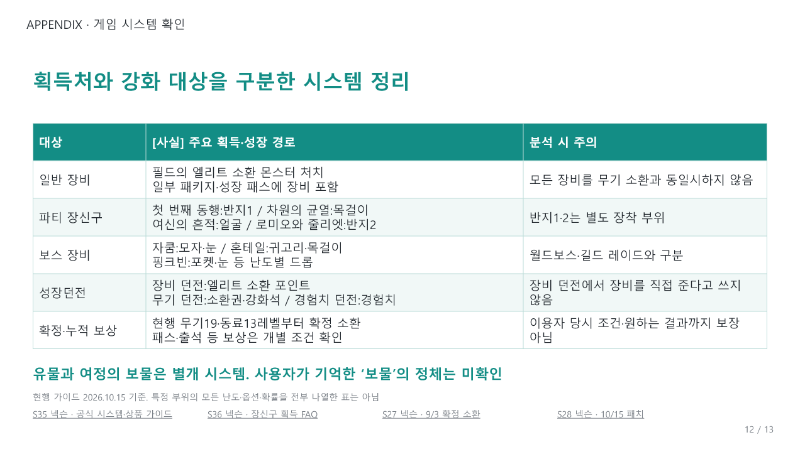
슬라이드 텍스트 보기
APPENDIX · 게임 시스템 확인 · 획득처와 강화 대상을 구분한 시스템 정리 · 대상 · [사실] 주요 획득·성장 경로 · 분석 시 주의 · 일반 장비 · 필드의 엘리트 소환 몬스터 처치 · 일부 패키지·성장 패스에 장비 포함 · 모든 장비를 무기 소환과 동일시하지 않음 · 파티 장신구 · 첫 번째 동행:반지1 / 차원의 균열:목걸이 · 여신의 흔적:얼굴 / 로미오와 줄리엣:반지2 · 반지1·2는 별도 장착 부위 · 보스 장비 · 자쿰:모자·눈 / 혼테일:귀고리·목걸이 · 핑크빈:포켓·눈 등 난도별 드롭 · 월드보스·길드 레이드와 구분 · 성장던전 · 장비 던전:엘리트 소환 포인트 · 무기 던전:소환권·강화석 / 경험치 던전:경험치 · 장비 던전에서 장비를 직접 준다고 쓰지 않음 · 확정·누적 보상 · 현행 무기19·동료13레벨부터 확정 소환 · 패스·출석 등 보상은 개별 조건 확인 · 이용자 당시 조건·원하는 결과까지 보장 아님 · 유물과 여정의 보물은 별개 시스템. 사용자가 기억한 ‘보물’의 정체는 미확인 · 12 / 13 · S35 넥슨 · 공식 시스템·상품 가이드 · S36 넥슨 · 장신구 획득 FAQ · S27 넥슨 · 9/3 확정 소환 · S28 넥슨 · 10/15 패치 · 현행 가이드 2026.10.15 기준. 특정 부위의 모든 난도·옵션·확률을 전부 나열한 표는 아님
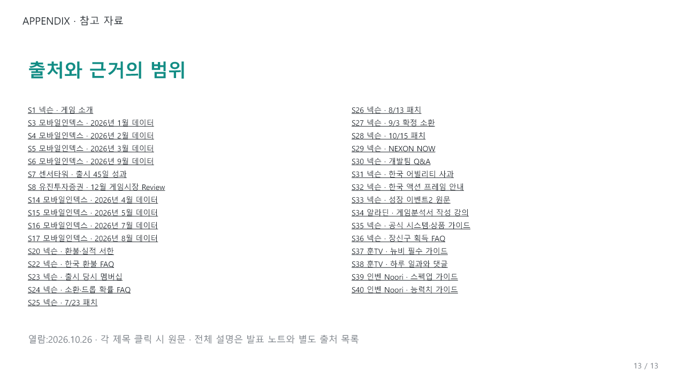
슬라이드 텍스트 보기
APPENDIX · 참고 자료 · 출처와 근거의 범위 · S1 넥슨 · 게임 소개 · S3 모바일인덱스 · 2026년 1월 데이터 · S4 모바일인덱스 · 2026년 2월 데이터 · S5 모바일인덱스 · 2026년 3월 데이터 · S6 모바일인덱스 · 2026년 9월 데이터 · S7 센서타워 · 출시 45일 성과 · S8 유진투자증권 · 12월 게임시장 Review · S14 모바일인덱스 · 2026년 4월 데이터 · S15 모바일인덱스 · 2026년 5월 데이터 · S16 모바일인덱스 · 2026년 7월 데이터 · S17 모바일인덱스 · 2026년 8월 데이터 · S20 넥슨 · 환불·실적 서한 · S22 넥슨 · 한국 환불 FAQ · S23 넥슨 · 출시 당시 멤버십 · S24 넥슨 · 소환·드롭 확률 FAQ · S25 넥슨 · 7/23 패치 · S26 넥슨 · 8/13 패치 · S27 넥슨 · 9/3 확정 소환 · S28 넥슨 · 10/15 패치 · S29 넥슨 · NEXON NOW · S30 넥슨 · 개발팀 Q&A · S31 넥슨 · 한국 어빌리티 사과 · S32 넥슨 · 한국 액션 프레임 안내 · S33 넥슨 · 성장 이벤트2 원문 · S34 알라딘 · 게임분석서 작성 강의 · S35 넥슨 · 공식 시스템·상품 가이드 · S36 넥슨 · 장신구 획득 FAQ · S37 훈TV · 뉴비 필수 가이드 · S38 훈TV · 하루 일과와 댓글 · S39 인벤 Noori · 스펙업 가이드 · S40 인벤 Noori · 능력치 가이드 · 열람:2026.10.26 · 각 제목 클릭 시 원문 · 전체 설명은 발표 노트와 별도 출처 목록 · 13 / 13
함께 보기
환불·공지·CS 운영 대응 보고서 ↗ · 월별 매출·환불 재무 영향의 후속 확인 ↗
모바일에서는 이미지를 눌러 확대하거나 PDF로 열람할 수 있습니다. 슬라이드 텍스트도 각 장 아래에서 확인할 수 있습니다. 발표자 메모와 수업 자료 공유 주소는 공개본에 포함하지 않았습니다.